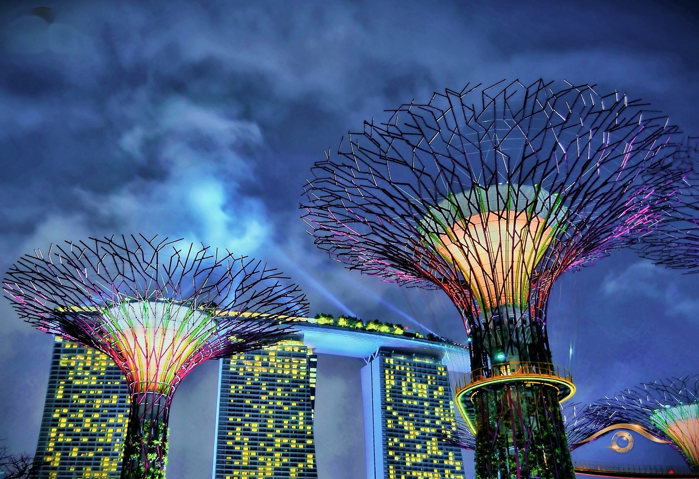

Portfolio · 55 photographs
Seven series, one way of seeing.
Singapore after dark, gardens in full colour, wildlife up close, temples and traditions, and the places further away. Pick a series, then tap any photograph to see it large.
Series 1 of 7
Singapore Nights
When the sun goes down, the city starts to glow. Gardens by the Bay and Marina Bay after dark.
Series 2 of 7
Garden Light
Petals, colour and soft light. Orchids, dahlias and blooms from Singapore's gardens and beyond.
Series 3 of 7
Quiet Places
Pagodas, bridges and still water. The calm corners worth slowing down for.
Series 4 of 7
Wild Singapore
The wildlife that shares the city, and the moments it lets you see.
Series 5 of 7
Deep Blue
A window into the ocean. Colour and patience behind the aquarium glass.
Series 6 of 7
Temples & Traditions
Gold, colour and devotion. Temples and the traditions they hold.
Series 7 of 7
Journeys
Places further from home: Sri Lanka's hill country, London, Colombo and Penang.
Beyond the lens
Songs, reels & stories
Not everything fits in a still frame. Singing videos, travel clips and new photos go up every week on Instagram, TikTok and Facebook.
About · Singapore
The First Sense
Sight is the first sense. Before we name a thing or think about it, we see it, and sometimes what we see stops us. The First Sense is my collection of those moments: Supertrees glowing after dark, a dahlia in soft light, a macaque lost in thought, a temple tower painted in every colour.
I'm based in Singapore, and photography is my hobby and my way of slowing down. I'm drawn to bold, vibrant colour and to quiet places where the light does the talking. Every photograph here is my own, and new ones join each series every week.
When I'm not behind the camera, I sing. You'll find those videos alongside my photos on Instagram, TikTok and Facebook.
Not every moment asks to be remembered. Some simply move you, and those are the ones you keep.